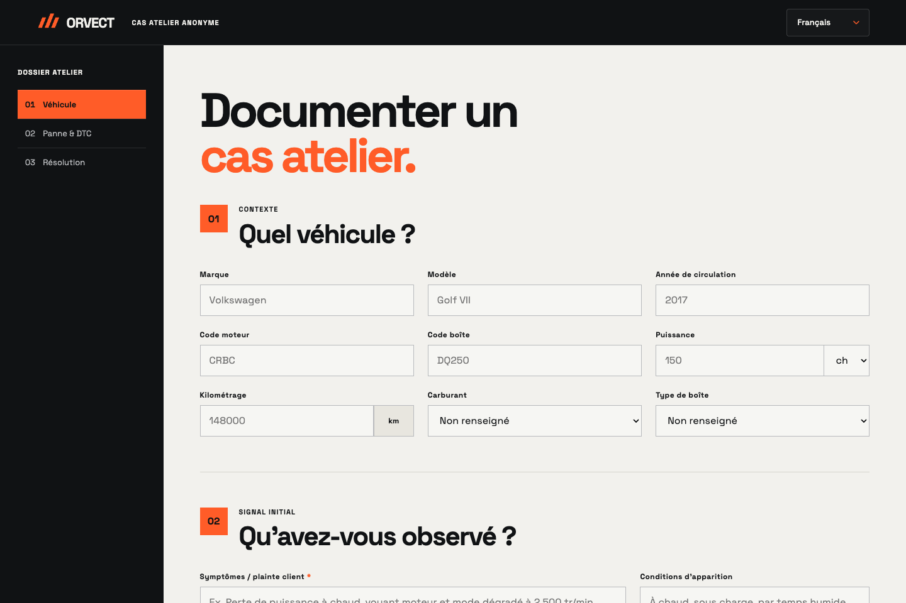

THE PROTOTYPE / GUIDED WALKTHROUGH
From a signal.
To understanding.
Explore the reasoning workflow, one screen at a time. Scroll or choose a step.
Interactive illustration with synthetic data. No AI request or real diagnosis is performed.
Explore the demo ↓Start with the right vehicle.
Set the vehicle, engine and reported symptoms before interpreting a code.
Bring the signals together.
A code is an input. Its source and compatibility still need to be checked.
Follow the evidence.
Separate observations, missing information and interpretation.
Keep the technician in control.
Keep a traceable record of the context, evidence and next checks.
Volkswagen Golf
2018 · 1.6 TDI · Synthetic example
- Engine
- 1.6 TDI
- Mileage
- 126 400 km
- Context
- Intermittent warning light
A code, not a verdict.
- Source
- Workshop input
- Vehicle compatibility
- To be checked
A fault code alone does not justify replacing a part.
Make uncertainty visible.
- 01Record observations
Describe when the warning appears.
- 02Verify the source
Confirm applicability to this vehicle.
- 03Add measurements
Evidence before a conclusion.
A clear next step.
ORVECT / CASE 001
Human review required
Vehicle context, observed signals and missing evidence in one record.
This demo does not authorize driving or a repair.
ORIGINAL INTERFACE CAPTURES · ENGLISH
Inside the workspace.


These original captures remain in English. All screens in the guided demo above follow your selected language.
Open the prototype ↗ORVECT / BETA